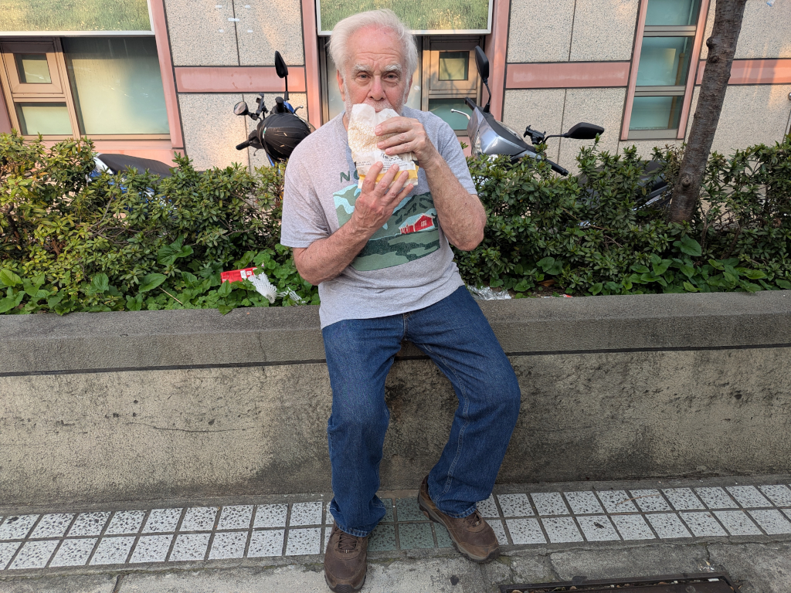
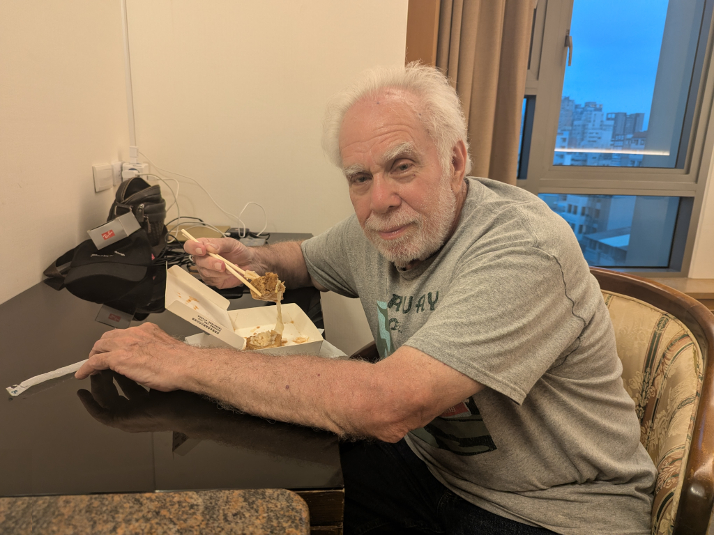
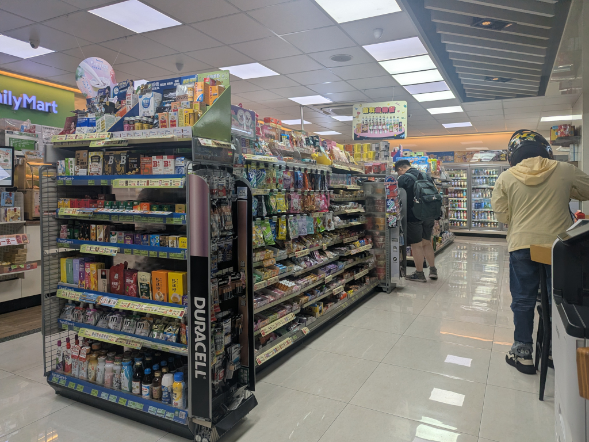
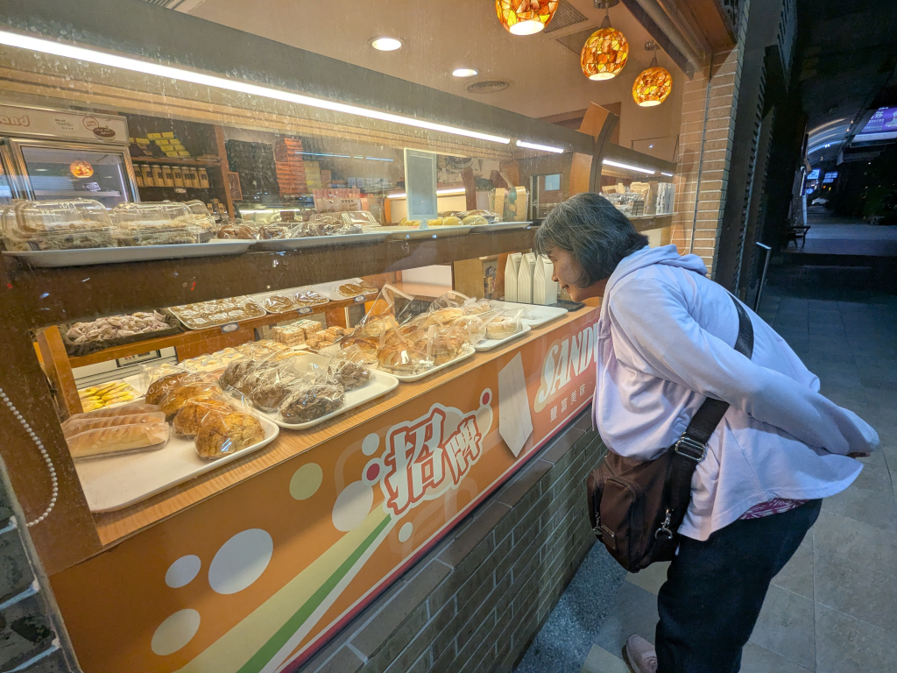
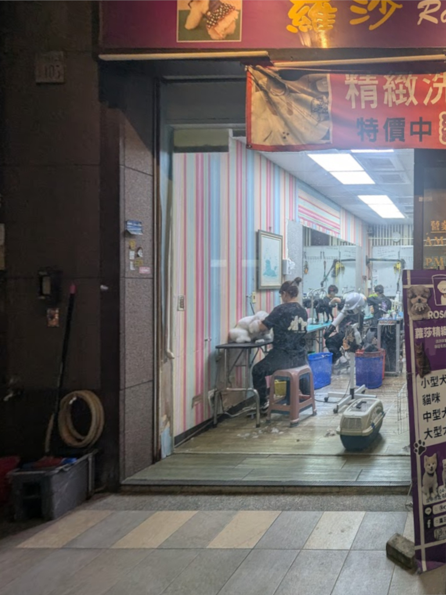

April 14, 2026
Back to Main
 The bus ride only took about 15 minutes, and when we got to the bus stop in front of the hotel, Mei-O and Meihui wanted to chat a while, so we hung out there for quite a while, allowing me to finally eat my yummy 大雞排, sharing it with Mei-O! Around 6:30 in the evening, Meihui knocked on our door, delivering a couple of boxes of 臭豆腐 to us! It was pretty good with great texture, but the pickled cabbage wasn't as good as our favoritenoteThe best 臭豆腐
we've ever eaten was from a stand run by a young lady in a night market not far from where Mingshun, Mei-O's late younger
brother, lived. We walked over there and ate there quite often when we stayed with Mingshun and his family. I really wanted to go
back there to see if she was still there and, if she was, to have some of her 臭豆腐. She dressed it up with a delicious slightly
sweetened pickled cabbage with shredded carrots and cucumbers concoction which made it so good. .
We enjoyed it in our room, then, after Mei-O finished off the
枇杷 her new friend Lisa gave her, ...
 ...we headed out for an evening walk, first stopping right down the street at Family Mart (I needed something to drink after the 臭豆腐). And what's Mei-O eating? Family Mart sells all kinds of ready-to-eat hot snacks, and Mei-O spotted one of her favorites, 番薯 (sweet potato), so she had to try one. We left Family Mart pretty satisfied. Across the street from Family Mart we found 多喜田 (Top Stand, a bakery and coffee shop), and Mei-O couldn't help peeking in the window to admire the luscious pastries. Before coming to Taiwan this trip, we imagined all the opportunities we would have to eat all sorts of our favorite local foods and snacks, but by now, we realized we had to restrain ourselvesnoteShe's smiling, but she was really crying inside! !
Mei-O loves pastries from Taiwan, but we passed on having any tonight.
 Continuing our walk, we passed 蘿莎精緻寵物美容學苑 (Rosa's Exquisite Pet Grooming Academy), a place we'd always enjoyed looking into in past years. There are always several groomers workingnoteNotice there are dogs in
the two blue baskets! , and always some good boys and girls patiently awaiting their
turn. (It seems like poodles were the most common customers.)noteAll of these doggie pictures were taken through the academy's very dirty windows. . These were the last pictures I
took tonight. Tomorrow's gonna be another busy day, so we figured we'd better get to bed and get some rest after today's adventures.
|
{kind=link}
{kind=link}
{kind=link}
{kind=link}
{kind=link}
{kind=link}
{kind=link}
{kind=link}
{kind=link}
{kind=link}
{kind=link}
{kind=link}